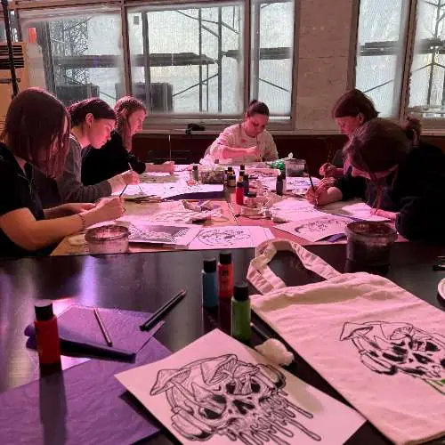

Творить самой
Мастер-класс по росписи одежды в Москве
Создайте вещь со своим характером — даже если кажется, что вы совсем не умеете рисовать.

Что будем делать
- Выберем идею.
- Перенесём рисунок на вещь.
- Распишем его красками по ткани.
- Разберём закрепление рисунка и уход.
Соловей подготовит понятный путь, поможет выбрать или доработать эскиз и будет рядом на каждом этапе. Одинаковые работы и одинаковый темп здесь не требуются.
Можно прийти со своей вещью
Главное — заранее обсудить её. Для хлопка, денима, кожи и других тканей нужны разные материалы и подготовка, поэтому Соловей сначала посмотрит вещь и подскажет, подойдёт ли она. Если своей вещи нет, можно выбрать шоппер.
Мастер-класс подойдёт для дня рождения, девичника, встречи с друзьями или дня, когда душа просто хочет творить. Это не только занятие, но и совместное воспоминание — с готовой вещью в финале.
Форматы и стоимость
Групповой формат — от 3 500 ₽ с человека. Индивидуальный — от 6 500 ₽. Детали зависят от вещи и формата. После сообщения мы уточним состав участников, вещь, дату и точную стоимость.
Записаться на мастер-класс ↗